<!DOCTYPE html>
<html lang="en">

<head>
    <meta charset="UTF-8">
    <meta name="viewport" content="width=device-width, initial-scale=1.0">
    <title>Blueramp - Event Management</title>
    <!-- Bootstrap CSS -->
    <link href="https://cdn.jsdelivr.net/npm/bootstrap@5.3.0/dist/css/bootstrap.min.css" rel="stylesheet">
    <!-- Font Awesome for icons -->
    <link rel="stylesheet" href="https://cdnjs.cloudflare.com/ajax/libs/font-awesome/6.4.0/css/all.min.css">
    <style>
        .footer {
            /* background-color: #000000; */
            background: linear-gradient(rgba(0, 0, 0, 0.4), rgba(0, 0, 0, 0.4)),
                url('/assets/images/bg2.webp');
            ;
            background-size: cover;
            background-position: center;
            -webkit-mask-image: linear-gradient(to top, #020916 85, transparent 90%);
            mask-image: linear-gradient(to top, #020916 85%, transparent 90%);
            color: #212529;
            padding: 3rem 0;
            text-align: center;
            border-top: 1px solid #e9ecef; 
        }

        .footer-brand {
            font-size: 1.8rem;
            font-weight: 700;
            margin-bottom: 1.5rem;
        }

        .footer-brand img {
            max-width: 200px;
            height: auto;
        }

        .footer-tagline {
            max-width: 500px;
            margin: 0 auto 2rem;
            color: #6c757d;
            font-size: 1.1rem;
        }

        .social-container {
            display: flex;
            justify-content: center;
            gap: 1.5rem;
            margin-bottom: 2rem;
        }

        .social-container a {
            text-decoration: none;
        }

        .social-icon {
            position: relative;
            width: 40px;
            height: 40px;
            border-radius: 50%;
            border: 1px solid #dee2e6;
            display: flex;
            align-items: center;
            justify-content: center;
            color: #ffffff;
            transition: 0.2s ease;
            overflow: hidden;
        }

        .social-icon::before {
            content: '';
            position: absolute;
            bottom: 0;
            left: 0;
            width: 100%;
            height: 0%;
            background-color: #0056b3;
            transition: height 0.3s ease;
            z-index: 0;
        }

        .social-icon i {
            position: relative;
            z-index: 1;
        }

        .social-icon:hover {
            color: white;
            border-color: #0056b3;
            transform: scale(1.1);

        }

        .social-icon:hover::before {
            height: 100%;
        }

        .footer-links {
            display: flex;
            justify-content: center;
            flex-wrap: wrap;
            gap: 1.5rem;
            margin-bottom: 2rem;
        }

        .footer-links a {
            color: #6c757d;
            text-decoration: none;
            transition: color 0.3s ease;
        }

        .footer-links a:hover {
            color: #0056b3;
        }

        .copyright {
            color: #adb5bd;
            font-size: 0.9rem;
        }
    </style>
</head>

<body>

    <!-- Your page content here -->

    <!-- Footer -->
    <footer class="footer">
        <div class="container">
            <div class="footer-brand"></div>

            <div class="social-container">
                <a href="#" class="social-icon" aria-label="Facebook"><i class="fab fa-facebook-f"></i></a>
                <a href="#" class="social-icon" aria-label="Twitter"><i class="fab fa-twitter"></i></a>
                <a href="#" class="social-icon" aria-label="YouTube"><i class="fab fa-youtube"></i></a>
                <a href="#" class="social-icon" aria-label="Instagram"><i class="fab fa-instagram"></i></a>
                <a href="#" class="social-icon" aria-label="LinkedIn"><i class="fab fa-linkedin-in"></i></a>
            </div>

            <div class="footer-links">
                <a href="#">About</a>
                <a href="#">Services</a>
                <a href="#">Portfolio</a>
                <a href="#">Contact</a>
            </div>

            <p class="copyright">© 2023 Blueramp. All rights reserved.</p>
        </div>
    </footer>

    <!-- Bootstrap JS -->
    <script src="https://cdn.jsdelivr.net/npm/bootstrap@5.3.0/dist/js/bootstrap.bundle.min.js"></script>
</body>

</html>